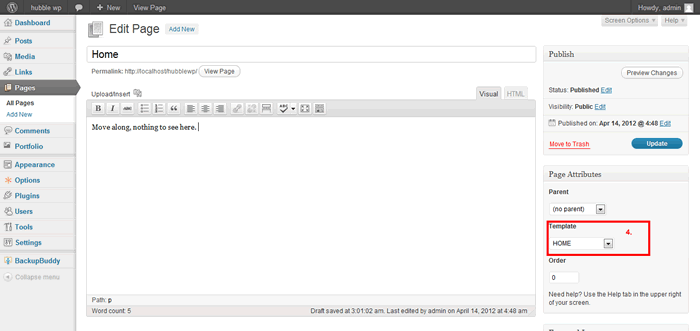
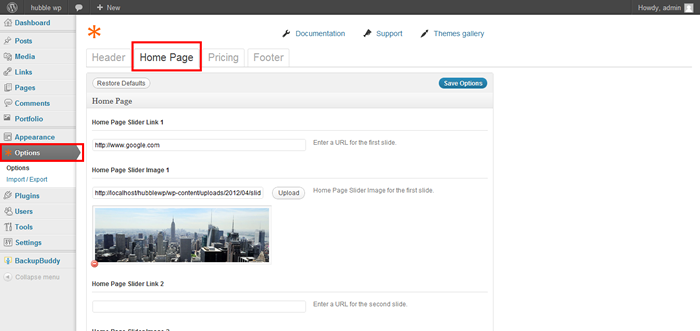
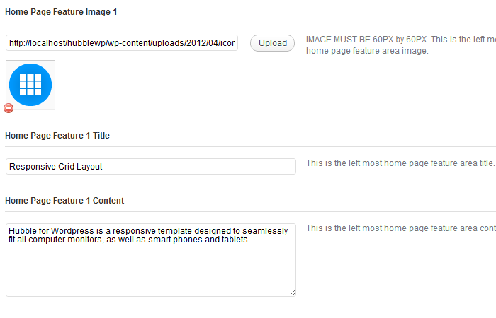
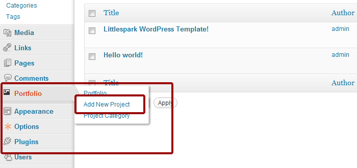
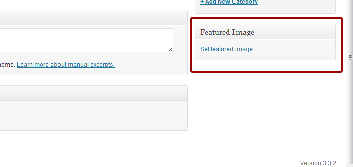
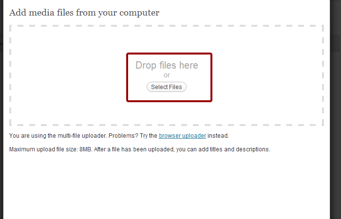
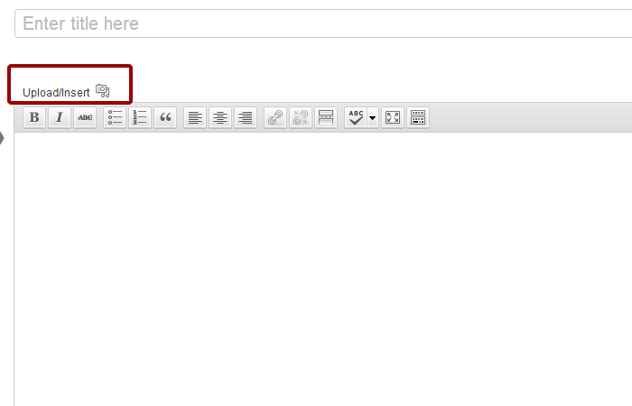
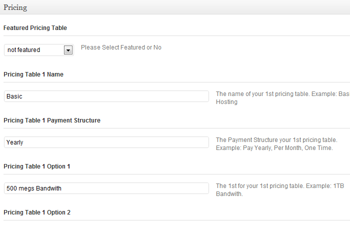
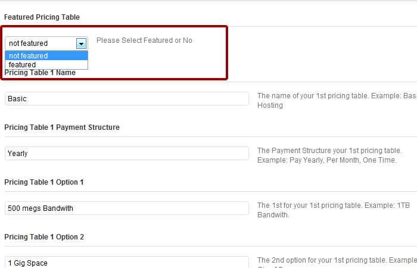

Hubble WP WordPress Theme
Theme Tutorials
Overview
This tutorial will guide you to setup the theme similar with our demo.
Please take the time to read through the tutorials and take notice of the instructions listed here, as many support related questions can be answered simply by re-reading these tutorials.
Before starting, please install and activate all recommended plugins.
Table of Contents
- Home Page
- Portfolio Page
- Blog Page
- Pricing Tables
- Contact Page
- Setup Menus
- Footer Widgets
Theme Installation
- Unzip the zip file that you download from Wrap Bootstrap and locate the 'hubblewp' folders inside the 'theme' folder. This is the folder and contents you will need to upload to your webserver.
- FTP Upload the 'hubblewp' folders to your 'wp-content/themes/' directory on your web server, then you can activate the theme.
- After you activate the theme, you can change the theme settings. Login to wordpress admin panel and click the ' Appearance' tab then click ' Theme Options' sub tab .
If you want quick setup for your website, you can import our xml data sample that included in the "import" folder, here are the steps how to import sample data :
- Click 'Tools >> Import' then choose 'Wordpress'.
- Then browse the xml sample data file.
- Click 'Upload file and import'
1. Home Page
Tutorial to add the Home page.
- Click the 'Pages' tab.
- Click the 'Add New' Sub Tab
- You can name it 'Homepage' or 'Welcome' or any name that you want.
- Select the 'HOME' template in the right 'Page Attribute' section.
- There's no need to add content to the home page. All content in the home page will be added in the options panel later in the tutorial.
- When you are ready, click Publish.

Set this home page as front page
- In the left side menu, click the 'Settings' tab.
- Click the 'Reading' sub tab.
- Then change the "Front page displays" to "A static page" and choose the "Welcome" page that you just created.
- Save the settings.
Home page slider
- Click 'Options' in the left side navigation menu.
- You are now in the options panel. Click on "Home Page".

- In this panel you can upload 3 images to the slider. Images for the slider must be 1088px wide by 340px high.
- You can add a link to a slide by typing in a link in the Home Page Slider Link text box. Make sure to add the full url, ex: http://www.google.com.
- When you are ready, click Save Options.
Home page content
- If you scroll down past the slides you will see an area for the featured home page content.
- To upload an image you need to click the "upload" button.
- Fill in the necessary information for the title and content.

- When you are all done with your home page content and slides please click the "save options" button at the top right or bottom right of the page.
back to top
2. Portfolio Page
Tutorial to add Portfolio page
IMPORTANT: In order for your portfolio pieces to display properly you need to make the images the same size.
Add Portfolio Category
- On the left navigation there is a link to "portfolio". Click that link.

- Input your Project name in the "title" field.
- On the bottom right of the page you will see a "featured image" link. Click that link.

- Click on "Select files" and select an image for your portfolio.

- Select image to upload.
- After upload you will see the image information.
- Click the 'Use as featured image' to make the image as a primary image.(this primary image will be used as a thumbnail)
- You are done, close the upload window.
- Input your content.
- You may want to add an image for your portfolio post at this time.
- You can manage and upload the images with clicking 'Manage Images'.

- You will see the wordpress media uploader window show up.
- Add an image like you did for the featured post but instead of selecting "use as featured image" you will want to choose "insert into post".
- When you are ready, click Publish.
- You can add as many portfolio pieces as you want.
Add Portfolio Page
- Click the 'Pages' tab.
- Click the 'Add New' Sub Tab
- Enter the title 'Portfolio' in the title box.
- Select the 'Portfolio' template in the right 'Page Attribute' section.
- When you are ready, click Publish.
back to top
3. Blog Page
Tutorial to add Blog page
Wordpress.org does a much better job of explaining the details of posting. If you have any questions about posting blogs please refer to this page.
http://codex.wordpress.org/Writing_Posts
Add the Blog Category
- Click the 'Post' tab.
- Click the 'Categories' Sub Tab.
- Click the 'Add New Category' button and you are done!
- You will see the category you just added in the right side area.
Adding a blog post
- Click the 'Post' tab.
- Click the 'Add New' Sub Tab
- Start filling in the blanks.
- 'Upload' and 'set featured image' for slider. This featured image will be used for blog thumbnail.
- When you are ready, click Publish.
- You can add as many blog posts as needed.
Add the Blog page
- Click the 'Pages' tab.
- Click the 'Add New' Sub Tab
- Enter the title 'Blog' in the title box.
- Select the 'Blog' template in the right 'Page Attribute' section.
- Just leave the 'content editor box' blank.
- When you are ready, click Publish.
Sidebar
- Click 'Appearance >> Widgets'.
- Drag any widget to the 'Post Sidebar' position
back to top
4. Setup Pricing Tables
Tutorial for setting up the pricing tables.
- Add the pricing tables page
- Click the 'Pages' tab.
- Click the 'Add New' Sub Tab
- Enter the title 'Pricing' in the title box.
- Select the 'Pricing' template in the right 'Page Attribute' section.
- Just leave the 'content editor box' blank.
- When you are ready, click Publish.
Adding pricing tables
- Click the ' Options ' tab.
- Fill in the information for your pricing. There are examples on the right of the page.

- Add a 'Featured' pricing table.
- Above each pricing tables options you will see a drop down box for "not featured". Switch it to "featured" to feature a pricing table. You should only featured one pricing table.

5. Setup Contact Page
Tutorial for setting up the Contact Page.
IMPORTANT: All emails sent from your contact page will go to the admins email account, so make sure you have a valid email account in your admin account.
- Add the pricing tables page
- Click the 'Pages' tab.
- Click the 'Add New' Sub Tab
- Enter the title 'Contact' in the title box.
- Select the 'Contact' template in the right 'Page Attribute' section.
- Just leave the 'content editor box' blank if you only want a contact form. You can add any content you'd like though.
- When you are ready, click Publish.
6. Setup Menus
Finally, after you have add all the pages you can setup the menus for all the pages: Click 'Appearances >> Menus'.
For more info, please read our documentation #3.
back to top
7. Footer Widget
Tutorial to add Footer widget. First of all, please go to APPEARANCE >> WIDGETS
- Add Footer1 Sidebar
- Add a "text" widget
- Put the title as Contact
- Add your contact information.
- Click "Save"
- Add Footer2 Sidebar
- Add a "latest posts" widget
- and put the title with : Latest Post
- click "Save"
- Add Footer3 Sidebar
- drag "search" Widget into Footer3 Sidebar.
- Input the title with : "Search".
- click "Save".
- Add Footer4 Sidebar
- drag "pages" Widget into Footer3 Sidebar.
- Input the title with : "pages".
- click "Save".
back to top